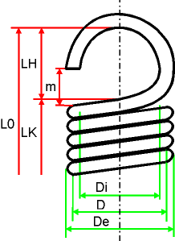

|
|
|


拉伸弹簧
拉伸弹簧计算在 DIN EN 13906-2 (2013) [98] 标准中描述。
工况数据
当您指定载荷时，您可以使用自己的值作为弹簧力或弹簧行程。
F0 是使相互叠放的弹簧圈分开所需的力。只有当弹簧被预紧时，此力才存在。
如果未选择 ，您可以影响有效圈数。
您还可以指定弹簧承受的是静态、准静态还是动态应力。
几何
您也可以直接在主屏幕中输入弹簧长度和弹簧直径。
除了未受力状态下的弹簧长度 L0，您也可以指定受力状态下的弹簧长度 L1 或 L2。
对于线径，您可以从列表中选择 DIN 2098 Supplement 1 中定义的直径值，或直接在列表中输入您自己的值。

图 47.1：拉伸弹簧所用的定义
Tension springs
The tension spring calculation is described in the DIN EN 13906-2 (2013) [98] standard.
Operating data
When you specify a load, you can use your own value as the spring force or travel.
The F0 is the force required to open the coils which lie one on top of the other. This force is only present if the spring is pretensioned.
If is not selected, you can influence the number of effective coils.
You can also specify whether the spring is to be subject to static, quasi-static or dynamic stress.
Geometry
You can also input the spring length and the spring diameter directly in the main screen.
Instead of the spring length in its non-stressed state, L0, you can also specify a spring length in its stressed state L1 or L2.
For the wire diameter, you can either select the diameter values as defined in DIN 2098 Supplement 1 from the list or enter your own value directly in the list.
Figure 47.1: Definitions used for tension springs